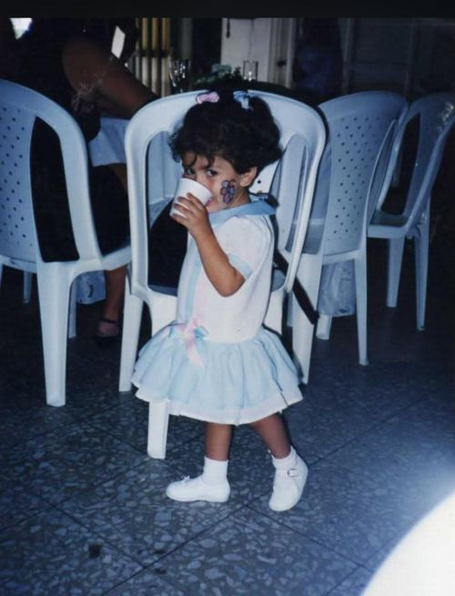
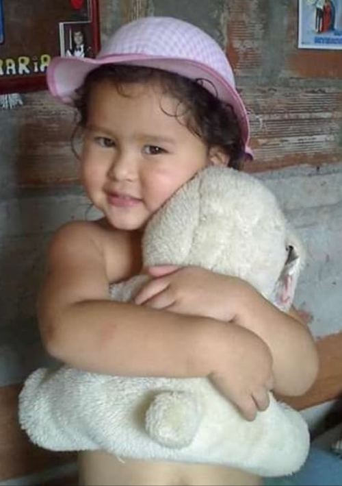
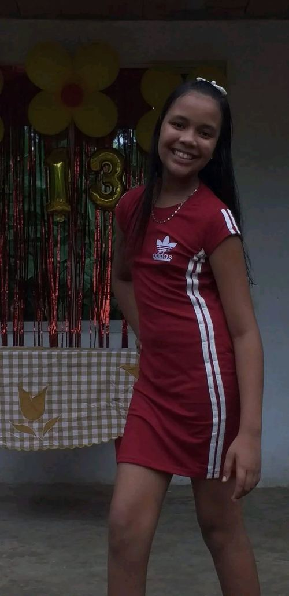
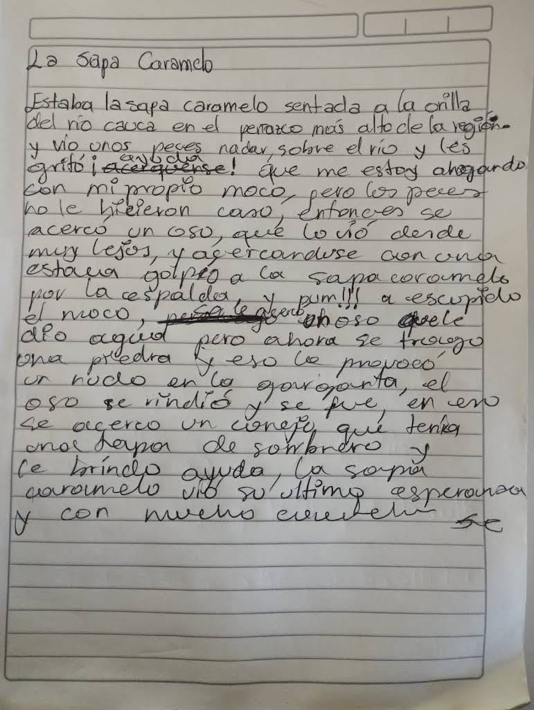

Cuento: "La Sapa Caramelo"
Lili — versión escritaRelato corto sobre una rana que, sentada a la orilla del río Cauca, persigue una mosca a través de distintos obstáculos hasta finalmente saciar su hambre con una manada de moscas.
Proyecto de la transversal de Comunicaciones — un recorrido por lo que aprendimos, lo que nos retó y lo que nos llevamos de este trimestre.
En nuestra opinión, la comunicación es un proceso fundamental que está presente en todo lo que nos rodea. No es exclusiva de los seres humanos, ya que los animales también se comunican entre sí y las plantas interactúan con su entorno y responden a diferentes estímulos. Cada ser vivo encuentra distintas maneras de transmitir información, expresar necesidades o reaccionar frente a aquello que sucede a su alrededor. Esto nos permite comprender que comunicarse hace parte esencial de la vida y de la forma en que nos relacionamos con nuestro entorno.
En el caso de los seres humanos, la comunicación nos permite establecer conexiones con otras personas, expresar nuestros pensamientos, sentimientos, necesidades e ideas y, al mismo tiempo, buscar que los demás comprendan aquello que queremos transmitir. El ser humano se comunica desde el vientre materno hasta el último día de su vida, utilizando diferentes formas de expresión, tanto verbales como no verbales. Por esta razón, comprender cómo nos comunicamos y la importancia que tiene este proceso resulta fundamental para fortalecer nuestras relaciones y alcanzar un verdadero entendimiento con los demás.
Estos son los 4 pilares de la comunicación. Puede ser transversal —porque atraviesa todo lo que hacemos— o condicionada —porque responde a una intención o necesidad puntual.
Cómo actuamos frente a los demás según la forma de expresar lo que pensamos y sentimos:
Las funciones del lenguaje según el papel que cumple cada elemento del acto comunicativo:
Todo lo que decimos sin palabras, y que según la teoría revisada pesa incluso más que lo verbal en una conversación cara a cara:
El reto consistió en identificar, desde nuestra propia vida, una situación donde los tipos de comunicación estuvieran presentes.
Mi reto más grande ha sido entablar una relación comunicativa cercana con mi abuela paterna. Desde pequeña noté que ella prefería más a mis hermanos y a mí no tanto; la cuestión es que ella discutió con mi madre cuando yo estaba en su vientre, y mi madre no la dejó verme de inmediato cuando nací, por lo que no llevamos una relación cercana. Intenté acercarme a ella una vez, pero no logramos ser cercanas ni hablamos mucho; por su parte no hay interés en entablar una comunicación conmigo, por lo que yo opto por reconocer simplemente que es mi abuela y debo respetarla. Me gustaría en algún momento poder llegar a tener una comunicación asertiva con ella, pero hoy en día no veo motivación de su parte.
Una vez tuve un malentendido con una compañera de trabajo por una situación laboral. Las dos entendimos las cosas de diferente manera y eso hizo que hubiera un poco de tensión entre nosotras. En lugar de discutir, decidimos hablar tranquilamente. Cada una explicó su punto de vista y escuchamos lo que la otra quería decir, siempre con respeto.
Una de las experiencias de comunicación que considero más difíciles en mi vida cotidiana es la que tengo con mi mamá. Nuestra comunicación puede llegar a ser confusa, porque muchas veces las dos interpretamos las situaciones de manera diferente y terminamos sintiendo que la otra persona no nos comprende.
Desde mi perspectiva, siento que en algunas ocasiones ella critica constantemente aspectos de mi vida, como mi forma de vestir, mi cuerpo, las cosas que me gustan, las decisiones que tomo o las personas con las que me relaciono. Debido a esto, muchas veces prefiero no contarle algunas cosas o no decirle completamente la verdad para evitar discusiones o problemas.
Sin embargo, desde su perspectiva, ella considera que no la amo, que soy una mala hija, que soy grosera y rebelde, y que siempre he hecho lo que quiero sin tener en cuenta sus consejos. También expresa preocupación por mí.
Esto me hace comprender que el problema no está únicamente en lo que una persona dice, sino también en la manera en que la otra persona interpreta lo que escucha. Considero que esta situación demuestra que nuestra comunicación no siempre es asertiva. Esta experiencia me ha enseñado que comunicarse de manera asertiva no significa estar de acuerdo con todo lo que la otra persona dice, sino poder expresar nuestras opiniones, sentimientos y límites con respeto, al mismo tiempo que escuchamos y respetamos los sentimientos de los demás.

Nací el 20 de diciembre de 1995. Mis padres son Juan Guillermo López Arroyave y Zully Estella Moreno Navas, y tengo dos hermanos mayores, Daniela y Juan José.
Fui una niña muy feliz en mi infancia: me gustaba jugar, dibujar, y aunque era pequeñita, nada me daba miedo y siempre fui muy curiosa. Hoy en día sigo siendo así, porque desde que estaba en sexto de bachillerato decidí que sería abogada, y eso fue lo que estudié. Siempre me ha encantado adquirir nuevos conocimientos, y por eso decidí estudiar una segunda carrera: Análisis y Desarrollo de Software, la cual estoy a punto de terminar con mucha emoción. Más adelante quiero especializarme en derecho informático, una de las tantas metas que tengo por cumplir.

Nací el 6 de noviembre de 2004 y tengo 21 años. Actualmente vivo con mi abuela, una persona muy importante en mi vida. Tengo un novio con quien llevo tres años de relación.
Trabajo como guía turística y estudio Análisis y Desarrollo de Software. Uno de mis principales sueños es graduarme, conseguir un buen trabajo y construir una vida estable. Me considero una persona tranquila y hogareña: me gustan las películas, estar en casa y disfrutar momentos agradables con mi novio. Tengo un hermano, Juan Pablo, y mi mamá se llama Yolanda; ellos viven en Estados Unidos desde hace tres años. Sueño con seguir creciendo, terminar mis estudios y, algún día, formar una familia.

Soy una persona responsable, respetuosa, creativa y comprometida con mi aprendizaje. Actualmente estudio Análisis y Desarrollo de Software en el SENA, área que me ha permitido fortalecer mis conocimientos y desarrollar nuevas habilidades. Me caracterizo por ser una persona que disfruta aprender, trabajar en equipo y enfrentar nuevos retos. Considero que la comunicación es fundamental tanto en el ámbito académico como personal, porque permite expresar nuestras ideas, comprender a los demás y construir buenas relaciones.
Relato corto sobre una rana que, sentada a la orilla del río Cauca, persigue una mosca a través de distintos obstáculos hasta finalmente saciar su hambre con una manada de moscas.
La misma historia, en la versión de Mariana.
Versión manuscrita de Ana Rebecca, tal como la escribió a mano.

Identificaron los tipos de comunicación (pasiva, agresiva, pasivo-agresiva y asertiva) a partir de un video, con ejemplos propios y análisis de escenas.
La misma actividad, resuelta por Mariana con otro compañero de ficha.
Presentación sobre la función metalingüística: cuando el lenguaje se usa para hablar sobre sí mismo — definir palabras, explicar reglas gramaticales, aclarar significados y corregir expresiones.
Presentación sobre la función apelativa del lenguaje: busca influir en el receptor y provocar una respuesta, a través de órdenes, peticiones, consejos o preguntas. Se identifica en publicidad, señales, instrucciones y conversaciones cotidianas.
Ensayo sobre cómo el saludo funciona como primer acto de comunicación no verbal: ajusta la proxémica y el contacto físico según la confianza o el rol de cada persona, con análisis de escenas de la película "El Abuelo".
Ensayo sobre kinésica, proxémica, paralingüística y emblemas en la vida cotidiana, con análisis de dos escenas donde aparecen emblemas.
Ensayo sobre la kinesis (gestos, expresiones faciales, posturas, mirada) como forma de comunicación no verbal, con análisis de dos escenas de la película "El Abuelo".
Aprendí que debo ser consciente de cómo digo las cosas, cómo debo comunicarlas para que mi mensaje llegue como debe ser. Entendí que la comunicación no es solo hablar, sino también escuchar de verdad y prestar atención a lo que transmito con mis gestos, mi tono de voz y mi actitud, no solo con las palabras.
Aprender sobre los tipos de comunicación (agresiva, pasiva y asertiva) me hizo reflexionar sobre cómo suelo expresarme en distintas situaciones, y me di cuenta de que ser asertiva es la forma más sana de comunicarme. También comprendí que muchos conflictos o malentendidos nacen de una mala comunicación, y que practicar la escucha activa y la observación ayuda a evitarlos.
Esta transversal me deja como aprendizaje que la forma en que me comunico influye directamente en mis relaciones, tanto personales como laborales y académicas, y que trabajar en mi manera de comunicarme es algo que puedo seguir mejorando cada día.
Aprendí que comunicarnos no significa solamente hablar, sino también saber escuchar y entender cómo transmitimos nuestros mensajes. Aprendí sobre la comunicación verbal y no verbal, los emblemas, la metalingüística y la comunicación asertiva, entre otros temas.
Estos temas me ayudaron a comprender que nuestros gestos, expresiones, tono de voz y palabras pueden transmitir diferentes mensajes, y que una mala comunicación puede generar malentendidos. También aprendí que ser asertivo significa expresar lo que pensamos y sentimos de manera clara y respetuosa, teniendo en cuenta a los demás.
Esta transversal me dejó como enseñanza que saber comunicarnos es fundamental en nuestra vida personal, académica y laboral, porque una buena comunicación nos permite evitar conflictos, fortalecer nuestras relaciones y entender mejor a las personas que nos rodean.
Durante todas las clases he tenido la oportunidad de analizar algo que antes no me había detenido a pensar con tanta profundidad: ¿realmente sé comunicarme bien con las demás personas? Y al reflexionar sobre mis propias experiencias, me di cuenta de que la respuesta no es tan sencilla como pensaba.
Siempre he considerado que soy una persona elocuente y que tengo facilidad para expresar mis ideas; sin embargo, aprendí que ser elocuente no significa necesariamente saber comunicarse de manera adecuada. La comunicación va mucho más allá de las palabras que decimos. También está presente en nuestros gestos, nuestras expresiones, nuestra postura, nuestra mirada e incluso en aquellas cosas que decidimos callar.
También pude reconocer que muchas veces evado conversaciones o situaciones que debería afrontar. Tengo muchas cosas que quiero decir, sentimientos que quiero expresar y pensamientos que quisiera compartir, pero cuando llega el momento de hablar, muchas veces termino quedándome en silencio por miedo a lo que la otra persona pueda pensar de mí, de mis palabras o de aquello que estoy tratando de expresar.
Todo esto me ha permitido comprender que la comunicación es una de las habilidades más importantes que, como seres humanos, debemos aprender a fortalecer cada día. Una palabra puede acercarnos a alguien, pero también puede generar un conflicto cuando no sabemos cómo decirla o cuando no pensamos en el efecto que puede causar.
Por eso, una de las mayores enseñanzas que me llevo de estas clases es que comunicar no consiste simplemente en hablar, sino en saber escuchar, observar, comprender y expresar lo que sentimos y pensamos de una manera adecuada. Porque, aunque parezca algo tan sencillo como decir una palabra, una palabra mal dicha puede convertirse en un problema mucho más grande de lo que imaginamos; en sentido figurado, hasta podría provocar una verdadera "guerra mundial".
Haga clic en el regalo 🎁
{kind=link}